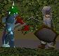
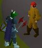
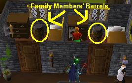
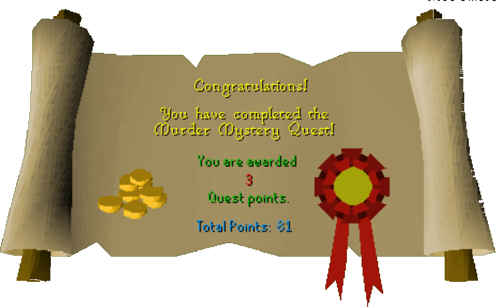

Murder Mystery
Description: Lord Sinclair, a highly respected Nobleman of Kandarin has been found murdered in his mansion. Despite the presence of a large number of guards all working hard to solve the crime, local law enforcement officers are totally baffled. Can you use your razor sharp analytical mind to uncover the evidence and unmask the culprit?Difficulty: Novice
Length: Short
Items & Skills Needed:
Reward: 3 Quest points, 1,406 Crafting XP, 2,000 coins
Instructions:

Talk to the guard near the gate of Sinclair Mansion, north of Seers' Village, and tell him you'll help them find the culprit.

Go to the room with all the evidence, including the Criminal's Dagger, and pick up the Pungent Pot. While you're there, you can also investigate the smashed window for the Criminal's Thread and pick up the Criminal's Dagger, though you won't need them just yet.
Go outside and investigate the gate near the Sinclair guard dog. It should say that the fierce dog barks at you.
Talk to one of the gossips and find out everything they know. They should mention the Sinclairs buying poison.

Go south, just slightly east of the Seers' Village bank, and talk to the Poison Salesman. Ask him about the sale that he made with the entire Sinclair family. Show the Poison Salesman the Pungent Pot, and he'll recognize the smell as his Multi-Purpose Poison.
Talk to each of the children the Poison Salesman said he sold poison to—Bob, Frank, David, Elizabeth, Carol, and Anna—and ask what they did with the poison.
Investigate each of the areas they said they cleaned. One of them will not show any signs of poison use. This is where the quest gets interesting—there are six possible outcomes.

The person who didn't use their poison is the culprit, but you'll need more evidence. Go to the room with the evidence and pick up the dagger. Then, investigate the window to find a thread. This thread is the same color as the trousers of your culprit.

Now search for the barrel belonging to the suspect whose pants match the color of the thread. Some of them are upstairs, but two of them are downstairs. You should find an item that belongs to that person in their barrel, which you'll use to collect their fingerprints.
Go to the room just west of the cook's room, where you should see two sacks. Search them to find flypaper—you'll need two sheets.

Fill your pot with flour from the Barrel of Flour in the cook's room (or from another source if preferred). Pour the flour on the Criminal's Dagger, then use the dagger on the flypaper. You'll obtain an unidentified fingerprint.
Get more flour from the pot and use it on the item you found in the culprit's barrel. Once you've applied the flour, use the item on the flypaper. Then, compare the culprit's fingerprints with the unidentified ones—they should match.
Talk to the guard and tell him you have evidence identifying the culprit. He'll ask you about each item and collect the evidence from you. He'll say the culprit will be placed under house arrest until the trial, and thank you for your help.
Congratulations, Quest Complete!

This quest guide was written by supercoolyo. Thanks to Dravan, Dracon, and Matty98 for corrections.
This quest guide was entered into the database on Sun, May 09, 2004, at 11:26:19 AM by Cav103 and was last updated on Thu, May 27, 2004, at 07:47:44 AM.